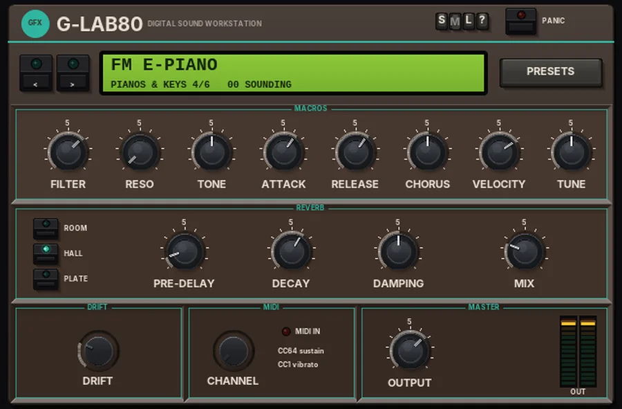

G Lab80
A late-80s digital sound workstation: pick one of 43 sounds and play it.

Overview
G Lab80 is a sound-module instrument in the spirit of the late-80s digital workstations. There are no oscillator pages to program: you pick a sound from the list, shape it with eight macro knobs and play. The sounds cover pianos and keys, mallets and bells, plucked guitars, pads, choirs, strings, brass and leads, and basses.
Under the hood each sound uses the engine that suits it: four-operator FM for the e-pianos, a plucked string for the clav, harp and guitars, struck inharmonic partials for the glockenspiel, an openly synthetic struck-string model for the pianos, a tonewheel-style partial bank for the organ, and detuned saws and pulses through a 4-pole filter for the analogue sounds. Some sounds add bell partials, breath, a chiff, vocal formants, their own tempo-synced echo, tremolo or a fast rotary-style chorus.
A REVERB section (ROOM, HALL or PLATE) is added on top as a send, so the dry sound always stays at full level. Up to 12 notes play at once; the bass and lead sounds marked mono below play one note at a time and glide between them.
Reach for it for
- Quick 80s and 90s keys, pads and bells without programming a synth
- Plucked guitar and harp layers in the late-80s style
- Choirs, strings and orchestra hits for pop and soundtrack work
- Mono basses with glide, from sine sub to acid and reese
- Sketching ideas fast: step through the sounds with < and >
Playing it
G Lab80 is an instrument: it has no audio input and makes its sound from MIDI.
- Insert G Lab80 on a track (as the first plug-in, or after a MIDI effect).
- Arm the track for recording and set its input to your MIDI keyboard (or draw notes in a MIDI item).
- Pick a sound with < and >, or click the display (or PRESETS) for the list grouped by type.
- Play. The MIDI IN light flashes on each note, and the display shows how many notes are sounding.
- If you use a multi-channel MIDI setup, set CHANNEL in the MIDI section to the channel you want; OMNI listens to all of them.
G Lab80 responds to the sustain pedal (CC64), the mod wheel (CC1, vibrato on the analogue sounds and the FM e-pianos) and all-notes-off (CC120 and CC123). Incoming MIDI is passed on down the chain. Sounds with their own echo or with the NATIVE DANCE drum loop follow the project tempo; when the transport is stopped they run on at that tempo.
Controls
The header
- S / M / L
- Panel size: small, medium or large. The panel also scales to fit the plugin window.
- ?
- Opens a pop-up with the design credit, the GFX website address and the address of this manual. Click anywhere to close it.
- PANIC
- Lets go of every held note at once (and of the sustain pedal), so stuck notes die away.
Sound
- < and >
- Step to the previous or next sound, in the order of the list (by type).
- Display
- Shows the sound's name, its group and its place in the group (e.g. PADS 2/4), how many notes are sounding, and SUS while the sustain pedal is down. Click it to open the sound list, grouped into sub-menus by type.
- PRESETS
- Also opens the sound list. Changing the sound stops any notes still sounding and puts FILTER, RESO, TONE, ATTACK, RELEASE and CHORUS back to neutral, so each sound starts from its own settings.
MACROS
Eight knobs that bend the chosen sound. At their neutral settings you hear the sound as it was designed.
- FILTER
- Moves the filter, from -6 to +3 octaves; at 0 it reads OPEN. On the analogue sounds (pads, strings, brass, leads, basses, choirs, plucks) it moves each note's own 4-pole filter up or down. On the pianos, FM e-pianos, clav, glockenspiel and organ it is a resonant low-pass on the output: 0 is wide open, and turning it down darkens the sound.
- RESO
- Filter resonance, 0 - 100%. On the analogue sounds it adds to the sound's own resonance, up to self-oscillation at the top. On the other sounds it adds a resonant peak to the output low-pass.
- TONE
- Brightness, 0 - 100% (50% is neutral). On the analogue sounds it moves the filter up to 1.5 octaves either way; on the FM e-pianos it sets how much bark the tine has; on the plucked strings it brightens or darkens the string; on the pianos it makes the hammers harder or softer.
- ATTACK
- Scales the attack of the analogue sounds' envelopes, 10 - 400% (100% is the sound's own). Lower is snappier, higher swells in more slowly. It never goes faster than 3 ms, so nothing clicks.
- RELEASE
- Scales how long most sounds ring on after you let go, 10 - 400% (100% is the sound's own).
- CHORUS
- Scales the sound's own chorus (or ensemble), 0 - 200%. Sounds without chorus, such as most basses, are not changed by it.
- VELOCITY
- How much playing harder makes notes louder, 0 - 100% (70% by default). At 0% every note plays at the same level. The struck and plucked sounds still get brighter when you play harder.
- TUNE
- Fine tuning, -50 to +50 cents.
REVERB
A send reverb added on top of the sound: the dry sound stays at full level and MIX sets how much reverb joins it.
- ROOM / HALL / PLATE
- The space: a small room, a large hall, or a dense, bright plate.
- PRE-DELAY
- The gap before the reverb starts, 0 - 150 ms (15 ms by default).
- DECAY
- How long the reverb lasts, 0.2 - 10 s (2.2 s by default).
- DAMPING
- How quickly the top end of the tail dies away, 0 - 100%. Higher is darker.
- MIX
- How loud the reverb is, 0 - 100% (25% by default). At 0% the reverb is off.
Drift
- DRIFT
- How much the instrument wanders, 0 - 100% (25% by default). The pitch drifts slowly (up to 20 cents at 100%) on the analogue, FM and plucked sounds; each analogue note starts slightly out of tune (up to 6 cents) and slightly brighter or darker; the filter wanders; and the chorus speed drifts a little. At 0% everything stays exact.
MIDI
- CHANNEL
- The MIDI channel G Lab80 listens to: OMNI (all) or CH 1 to CH 16.
- MIDI IN
- Lights when a note arrives or notes are sounding.
MASTER
- OUTPUT
- Output level, -24 to +12 dB.
- OUT meters
- Output level, left and right, with a floating peak. Click a meter to clear the peaks.
The output is softly clipped at -0.3 dBFS, so peaks never go over.
Sounds
The sound list, in the order of the menu. Sounds marked mono play one note at a time and glide from the last note.
Pianos & Keys
- Session Piano
- A warm, even, openly synthetic piano: struck partials with stretched tuning and paired strings. Playing harder brightens the hammer, adds knock and makes the top fade faster.
- Bright Piano
- The same piano with harder hammers, more knock and a wider shimmer between the strings.
- Chorus EP
- The FM tine e-piano with a stereo tremolo and a deep chorus.
- FM E-Piano
- The four-operator FM tine piano; velocity sets how hard the tine barks.
- Clav
- A bright plucked string heard from a pickup near its end, with bite and a quick damper when you let go.
- Drawbar Organ
- An organ from sine partials with third-harmonic percussion on fresh chords, a key click and a fast rotary-style chorus.
Mallets & Bells
- Glockenspiel
- A struck metal bar: inharmonic partials, a soft mallet click, and it rings on.
- Fantasy Bells
- Bell partials over a slow, detuned saw pad with chorus.
- Crystal Harp
- Chiming, slightly detuned partials over a soft, bright pad with a deep chorus.
- Staccato Glass
- Short 'aah' voices with glassy bell partials and an echo.
Guitars & Plucks
- LA Nylon
- A round pluck with a soft pick over a quiet sine body that swells in.
- LA Steel
- A bright steel-string pick with a shimmering synth body.
- LA Clean
- A chorused electric guitar (pickup near the bridge), with echo.
- LA Harmonics
- Glassy string harmonics over a soft pluck, with echo.
- Nylon Atmos
- A plucked string over a slow, warm pad, with echo.
- Pizz Flow
- A bright, short pluck with bell partials and a quick echo.
- Harp
- A long, round pluck.
Pads
- Synth Pad
- Detuned saws through a slowly opening 4-pole filter, with chorus.
- Warm Pad
- Saw and sub under a low filter that moves slowly, with a wide chorus.
- Soundtrack Pad
- A chime over a slow, warm filter sweep, with echo.
- Native Dance
- A tempo-synced log-drum loop, retuned to each held note, riding a dark resonant sweep, with echo.
Choirs & Voices
- Glass Voices
- A slow 'aah' choir with breath and vibrato.
- Dark Vox
- A low, slow 'ooh' choir.
- Fantasy Vox
- A bright 'aah' with a glassy chime on the front.
- Spaced Vox
- Airy 'eh' voices with a slowly drifting filter and a long echo.
Strings & Orchestra
- Strings
- Detuned saws with a slow attack and delayed vibrato.
- String Ensemble
- Bright saws into a three-phase ensemble.
- Fat Strings
- Thick saws with a little sub into the ensemble.
- Orchestra Hit
- A big octave stab that drops in pitch, with a burst of noise on the front.
Brass & Leads
- Brass Section
- A swelling filter, a small rise into each note and delayed vibrato; playing harder opens it up.
- Synth Brass
- Punchy saw brass with a strong filter envelope.
- Velo Stab
- A short stab: playing harder opens the filter right up.
- Hoover
- Mono. Wide, detuned saws and pulses that scoop up into the note, with a heavy chorus.
- Square Lead
- Mono. Two slightly detuned squares with glide, vibrato and echo.
- Calliope Lead
- A pipe: a sine with a little square, pitched breath, a short chiff, vibrato and echo.
- Pan Flute
- A sine with its breath tuned to the note, a soft chiff and vibrato.
Basses
- Bass Synth
- Mono. Saw, square and sub with a punchy filter envelope.
- Sub Bass
- Mono. A pure sine.
- Acid Bass
- Mono. A resonant saw with a snappy filter envelope and slides.
- Round Bass
- Mono. Saw, square and sub.
- Pluck Bass
- Short and punchy, and polyphonic.
- Hollow Bass
- Mono. Sine and square.
- Reese Bass
- Mono. Wide, detuned saws with a little sub.
Tips
- Use RELEASE and ATTACK to turn a sound into something else: a short RELEASE makes a pad into a stab, a long ATTACK makes a pluck swell in.
- On the analogue sounds, a little RESO with FILTER turned down gives the classic squelchy sweep; automate FILTER for builds.
- Set VELOCITY to 0% for even, sequenced parts; raise it for played keys and pianos.
- The basses and leads that glide are mono: play legato (overlapping notes) to hear the glide.
- If the sound is too wet in a busy mix, pull the REVERB MIX down and use a send reverb shared with the rest of the track list.
File: gfx-g-lab80.jsfx